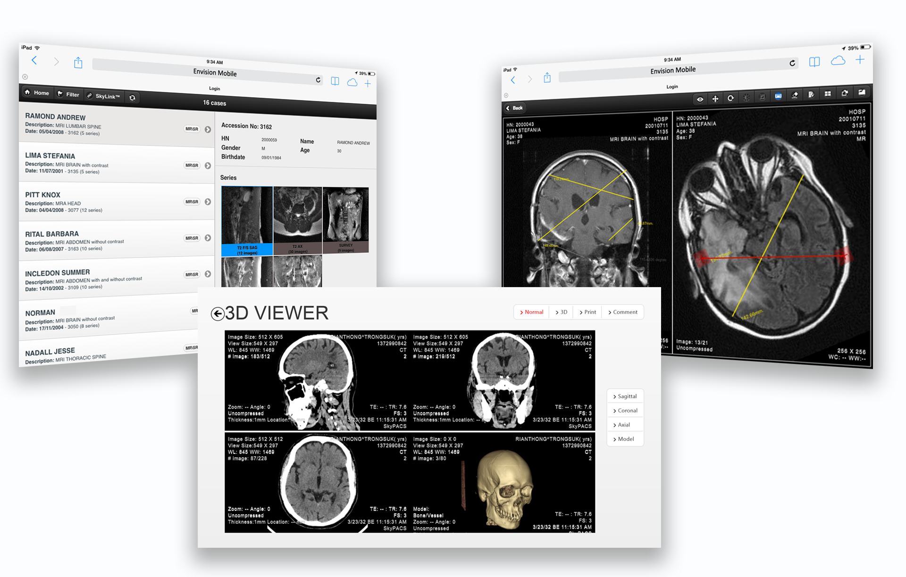

SkyPACS
Medical Image Solution for the Hospital
SkyPACS is a low cost and customizable mobile solution for radiologists and medical doctors to view medical images of any type in both 2D and 3D planes. The solution is designed to be an assistive technology with the focus on simplicity and user-experience. SkyPACS can be integrated to any existing Picture Archiving and Communication System or PACS.
With SkyPACS, the customers have the flexibility to choose backend services: cloud computing and storage on public cloud, private server, or hybrid system. A full SaaS option is also available. On the front end side, devices of any type including iOS, Android, Windows 8, and Desktop machines can access SkyPACS through the Internet. With the data security as our main concerns, SkyPACS is designed to leave a zero footprint on the mobiles devices. Patient data are stored and manipulated on the server and images are streamed to devices for a display purpose only.
Main features of SkyPACS includes:
- Zero footprint
- Capable of connect to any PACS
- All standard tools for viewing and diagnosis in 2D
- 3D viewing and printing
- Automatic tumor detection and reconstruction
- Convenient tools for collaboration – SkyLink and SkySync
- Case management tools (integrated to Radiology Information System)
Awards
- Winner of Thailand Imagine Cup 2013
- 3rd Place winner of Imagine Cup Worldwide Final 2013, Russia
- Winner of Thailand ICT Award (TICTA) 2013
- Winner of Asia Pacific ICT Award (APICTA) 2013, Hong Kong
- Winner of the National Software Contest 2013, Thailand
- Winner of International ICT Innovation Services Contest (InnoServe) 2013, Taiwan R.O.C.
Learn more about SkyPACS at novitat.co.th.